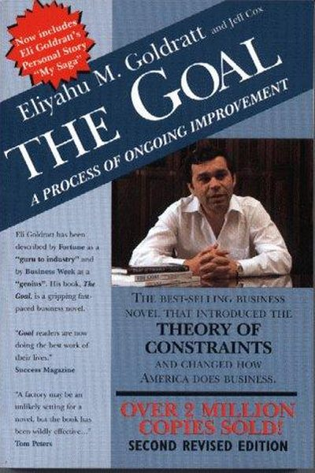

Library › Business & Startups
The Goal — Summary & Key Lessons

A process of ongoing improvement — the business novel that introduced the Theory of Constraints.
📖 OPEN THE FULL INTERACTIVE BREAKDOWN →🌐 Read it in Hindi, Hinglish, Gujarati, Tamil & 22 more languages — free, with audio.
💡 The Big Idea
The Goal is a business novel: Alex Rogo, a plant manager, must turn around a failing factory in 90 days. Through Socratic conversations with his mentor Jonah, he discovers the Theory of Constraints: every system has a bottleneck — one constraint that limits the whole. Improving anything but the constraint is an illusion of progress. The method: identify the constraint, exploit it fully, subordinate everything to it, elevate it, then find the next constraint. The story teaches that local efficiency is meaningless — what matters is the flow through the whole system.
🧠 The 8 Key Lessons
Lesson 1: The Goal: Make Money
The Goal
Before improving anything, define the goal. For a business, it's simple: make money now and in the future. Measures like cost per part, machine utilization and local efficiency are seductive — but they're only useful if they serve the goal. Most 'improvements' that look good locally actually hurt the whole.
📖 Example: The factory's 'efficient' machines produced piles of inventory nobody needed — looking busy while losing money. Local efficiency without system flow is waste. Read the full example →
⚡ Do this: Define your team's real goal in one line. For every 'improvement' you're considering, ask: does this serve the goal?
Lesson 2: The Bottleneck: The Constraint Rules
The Theory of Constraints
Every system has one constraint — the bottleneck that limits the entire output. Time saved at a non-bottleneck is a mirage; time saved at the bottleneck is gold. Find the constraint first, because everything else follows from it.
📖 Example: The plant's bottleneck machine (the NCX-10) determined the plant's total output — speeding up other machines just built more inventory behind it. The constraint was the whole game. Read the full example →
⚡ Do this: Identify your system's bottleneck: the step that limits the whole flow (work, sales, production). Watch it like a hawk.
Lesson 3: The Five Focusing Steps
The Theory of Constraints
The method: (1) Identify the constraint, (2) Exploit it fully (get everything out of it without new investment), (3) Subordinate everything else to it (other steps wait, don't overproduce), (4) Elevate the constraint (invest to increase it), (5) Repeat — find the new constraint. This loop is continuous improvement.
📖 Example: The plant exploited its bottleneck by stopping production of parts the bottleneck didn't need, freeing its time — output rose without any new machines. Then they elevated it. Read the full example →
⚡ Do this: Run the five steps on your main process this quarter. Start by identifying the true constraint — not the loudest problem.
Lesson 4: Drum-Buffer-Rope: The Rhythm of Flow
The Theory of Constraints
The drum is the bottleneck's rhythm; the rope is the signal that paces everything before it; the buffer is the protective inventory in front of the bottleneck. The whole system marches to the bottleneck's drum — no overproduction, no starvation. Flow, not bursts, is the goal.
📖 Example: The plant changed from 'push' (make everything fast) to 'pull' (make what the bottleneck needs) — and lead times collapsed, quality rose and profits followed. Read the full example →
⚡ Do this: Design your process around the bottleneck: what must it receive, and when? Sync everything to its rhythm.
Lesson 5: Local Efficiency Is the Enemy
The Theory of Constraints
A machine running 100% of the time is not necessarily productive — if it's producing what nobody needs, it's waste. The correct measure is system throughput, not local activity. Behavior follows measurement: if you reward local efficiency, you get local optimization and global damage.
📖 Example: The plant's accountants screamed about 'idle operators' at non-bottlenecks — but those operators were idle because the system didn't need their output. Idle at the right place is efficiency. Read the full example →
⚡ Do this: Audit your metrics: which ones reward local busyness over system results? Rebalance one measure this quarter.
Lesson 6: The Hero's Journey: From 'They' to 'We'
The Goal
Alex's transformation isn't technical — it's psychological. He stops blaming 'them' (corporate, workers, unions) and starts owning the system: 'I am the constraint.' Great process improvement begins with the leader seeing their own thinking as part of the problem.
📖 Example: Alex's breakthrough came when he realized the real constraint wasn't the machines — it was his and his team's assumptions about how the plant should run. The mindset shift unlocked everything. Read the full example →
⚡ Do this: Ask: what assumption of mine is the current constraint? Write it down — then test whether it's actually true.
Lesson 7: Socratic Thinking: The Power of Questions
The Goal
Jonah never gives Alex answers — he asks questions until Alex sees the system clearly. The Socratic method is the book's hidden teaching: the best improvements come from asking 'why' until the root assumption surfaces. A question is worth a thousand answers.
📖 Example: Every chapter's breakthrough comes from Jonah's question: 'What is the goal?', 'What is a bottleneck?', 'Why do you measure that?' — each question dismantles a false assumption. Read the full example →
⚡ Do this: For your current problem, ask 'why' five times — each answer leads to the next layer. Stop only when you hit the root cause.
Lesson 8: Ongoing Improvement: Never Finished
The Goal
The process never ends: elevate one constraint and a new one appears. This is the gift and the trap — improvement is continuous, not a destination. The organization that institutionalizes the five steps becomes self-renewing; the one that stops, stalls.
📖 Example: The plant's turnaround was only the first cycle — the sequel (It's Not Luck) shows the same thinking applied to distribution and sales as new constraints emerged. Read the full example →
⚡ Do this: Set a recurring 'constraint review' on your calendar: quarterly, run the five steps and find the new bottleneck.
✅ 5-Step Action Plan
- Define your real goal in one line.
- Find your true bottleneck — the flow-limiter.
- Run the five focusing steps this quarter.
- Sync everything to the bottleneck's rhythm (drum-buffer-rope).
- Reward system flow, not local busyness — and schedule a recurring constraint review.
💬 Best Quotes from The Goal
- “The goal of a company is to make money.”
- “An hour lost at the bottleneck is an hour lost for the entire system.”
- “Tell me how you measure me, and I will tell you how I will behave.”
Interactive version: mark lessons as read, listen in your language, share quote cards.